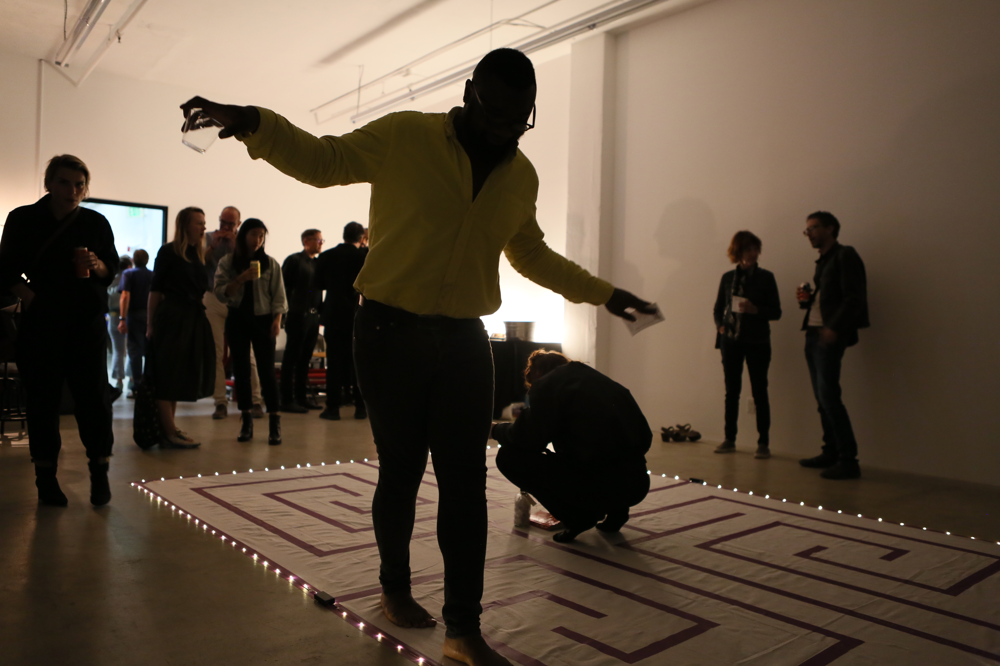
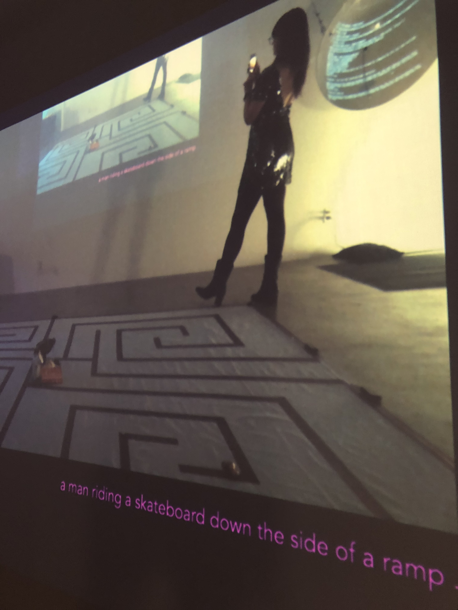
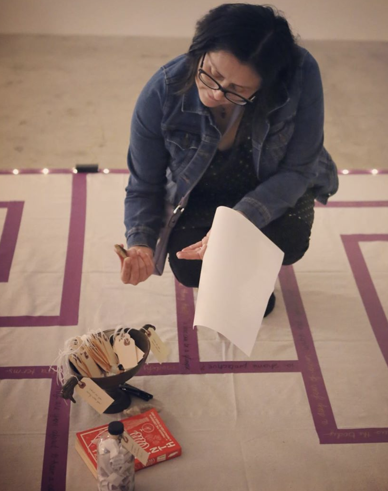

A participatory interaction and contemplative investigation, this reworking of the ancient archetype of the labyrinth is both a poetic text and a community gesture developing over the exhibition. It will build from analog data gathering into a networked, touch-sensitive multimedia installation considering intersections of queerness, code, and trauma--starting from the loss function, which in machine learning aims to minimize error, so that the machine behaves as intended.
What does it mean to process code, through both bodies and machines? MODIFY THE LOSS explores the absurd and tender aspects of our entangled encounters with technology and each other. What are embodied modes of processing—both code and trauma? How do we write, re-write, and collaborate on the codes and stories we carry with us? It uses the gallery as an active, collaborative research lab and performance space, responding with audiences in recursive feedback loops.
Featured at Feminist.AI as a solo exhibition, Nov-Dec 2019, Los Angeles.

